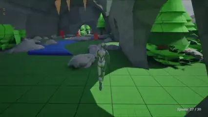

Featured project / Level design + gameplay
Wizard's Tower
I built a blockmesh level in Unreal Engine around reaching the Wizard's Tower. I focused on giving players different routes, guiding them through the environment, and adding opportunities to explore.

The project
Designing a playable blockmesh level
I wanted to make a level where the player could explore instead of following only one route. I used the trees, rocks, openings, and other objects to make different parts of the level stand out.
The screenshots show the level during the blockmesh stage. I focused on the layout and how the player would move through the space before adding finished art assets.
Gameplay and exploration
Reaching the Wizard's Tower
The main goal is to reach the foot of the Wizard's Tower. Along the way, the player can encounter enemies and use spears, and there are optional objectives to encourage exploration.
Those optional objectives include collecting a gem, collecting a spellbook, and destroying an explosive barrel. I wanted those activities to give players something extra to do without making them necessary to finish the level.
Level design showcase
Level Design Concepts
I used several level design concepts to make the space easier to read and give players choices. The examples cover environmental storytelling, leading lines, openings, player agency, feedback, shape language, landmarks, breadcrumbs, and color language.
See nine examples from the level, each labeled to show the design idea I was working with.
Player guidance
Teaching the player
This image captures a moment from the level with the player moving through a space framed by rocks, trees, and a distant opening.


My work and project scope
The images show level design and gameplay ideas using placeholder geometry and materials. The purpose of this page is to explain those decisions, not to present finished environment art.